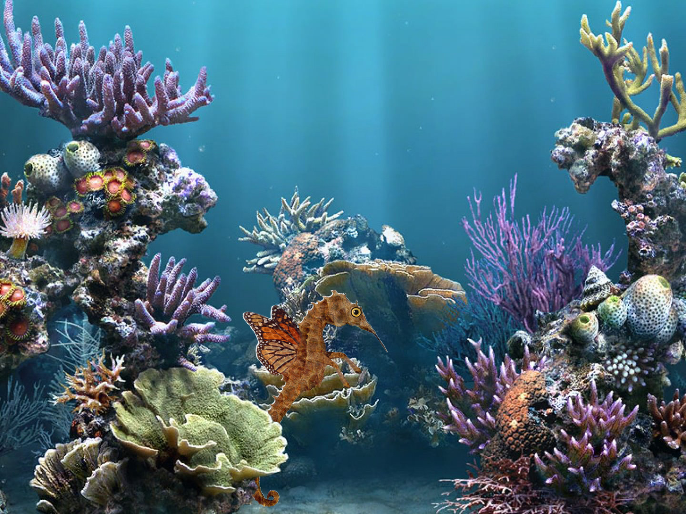
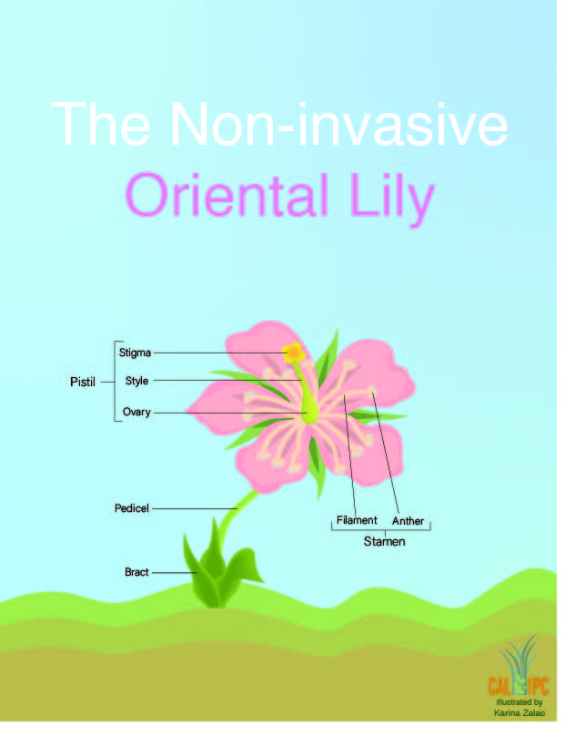

Hi! I am a Visual Communication Design student at San Francisco State University.
This was a project I made in Design 322 on photoshop. I combined pre-selected fruits to make a face and it's features.
This was another photoshop project that I did in Design 322. I combined a seahorse body, horse legs, hummingbird beak, and butterfly wings to make a "monster". I had to put it in a realistic element so I choice to blend it in underwater.
This was a project I did using illustrator. I chose to do a informational diagram of an Oriental Lily. This was one of my first projects using illustrator.
